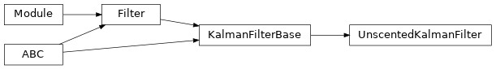

torchfilter.filters._unscented_kalman_filter¶
Private module; avoid importing from directly.
Module Contents¶
Classes¶
Standard UKF. |
- class torchfilter.filters._unscented_kalman_filter.UnscentedKalmanFilter(*, dynamics_model: DynamicsModel, measurement_model: KalmanFilterMeasurementModel, sigma_point_strategy: Optional[utils.SigmaPointStrategy] = None)[source]¶
Bases:
torchfilter.base.KalmanFilterBaseStandard UKF.
From Algorithm 2.1 of Merwe et al. [1]. For working with heteroscedastic noise models, we use the weighting approach described in [2].
[1] The square-root unscented Kalman filter for state and parameter-estimation. https://ieeexplore.ieee.org/document/940586/
[2] How to Train Your Differentiable Filter https://al.is.tuebingen.mpg.de/uploads_file/attachment/attachment/617/2020_RSS_WS_alina.pdf